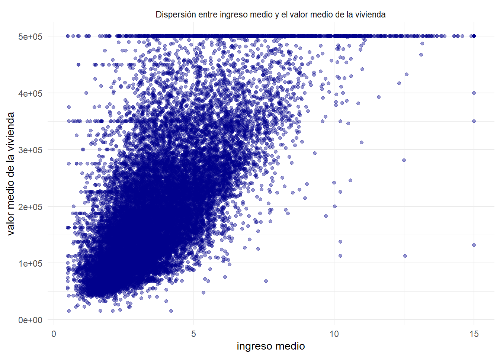
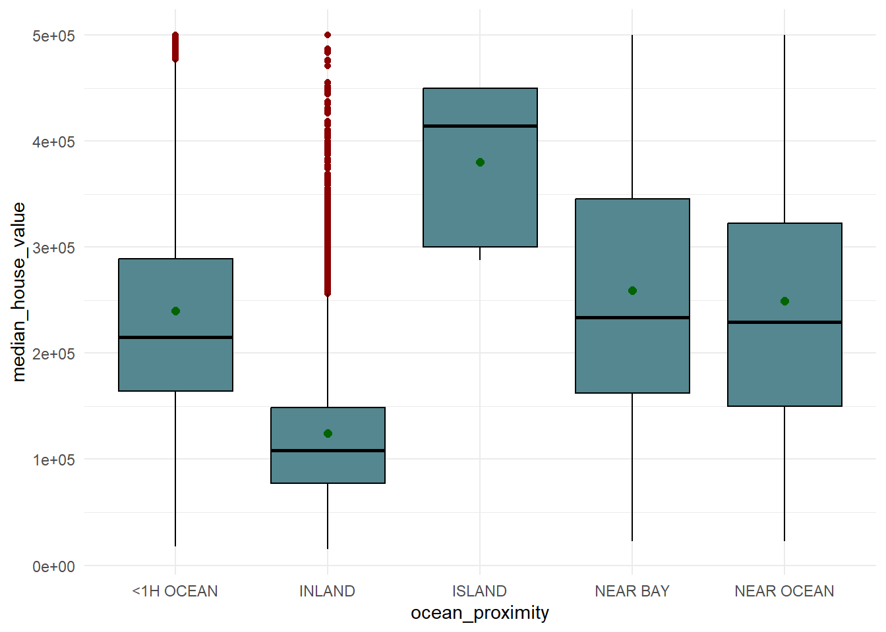

5 Análisis exploratorio bivariado
Tras haber caracterizado el comportamiento individual de median_house_value en la sección anterior, corresponde examinar cómo se relaciona esta variable con el resto de variables del conjunto de datos mediante un análisis exploratorio bivariado, el cual facilita identificar, de forma visual y estadística, qué variables predictoras muestran algún tipo de asociación con el valor de la vivienda, y de qué naturaleza es dicha asociación (sea lineal, no lineal, geográfica o prácticamente inexistente), información clave antes de avanzar hacia la ingeniería de características.
df %>%
ggplot(aes(x=median_income,y=median_house_value))+
geom_point(alpha=0.4,color='darkblue')+
labs(y='valor medio de la vivienda',x='ingreso medio')+
theme_minimal()+
facet_grid(.~'Dispersión entre ingreso medio y el valor medio de la vivienda')
median_income vs median_house_value: Se observa una tendencia lineal positiva consistente en la que a medida que aumenta el ingreso medio del bloque censal, el valor mediano de la vivienda tiende a aumentar de forma sostenida. Hay una línea horizontal de puntos en $500.000, correspondiente al truncamiento de median_house_value identificado en el análisis de la variable respuesta. Adicionalmente, la dispersión de los puntos no es constante a lo largo del eje X, en la que para los ingresos bajos la nube se concentra en un rango estrecho de precios, pero para los ingresos altos la dispersión vertical es considerablemente mayor.
df %>%
ggplot(aes(x = housing_median_age, y = median_house_value)) + geom_point(alpha = 0.4, color = 'darkblue') + labs(x='Antigüedad de la vivienda', y = 'Valor medio de la vivienda')+ theme_bw() + facet_grid(.~ 'Dispersión entre antigüedad y el valor medio de la vivienda')
housing_median_age vs median_house_value: La nube de puntos se distribuye de manera prácticamente uniforme a lo largo de todas las edades, sin que se aprecie una tendencia lineal clara ni creciente o decreciente. Para cada valor de antigüedad hay viviendas tanto baratas como caras, lo que sugiere una asociación muy débil entre estas dos variables. Se observa también una línea horizontal de puntos en $500.000, reflejo del truncamiento ya identificado en el análisis univariado de la variable objetivo.
df %>%
ggplot(aes(x = total_rooms, y = median_house_value)) + geom_point(alpha = 0.4, color = 'darkblue') + labs(x='Número total de habitaciones', y = 'Valor medio de la vivienda')+ theme_bw() + facet_grid(.~ 'Dispersión entre total de habitaciones y el valor medio de la vivienda')
total_rooms vs median_house_value: La mayoría de los puntos se concentran en la zona baja del eje X (pocas habitaciones), con una leve tendencia a que el valor de la vivienda aumente conforme crece el número de habitaciones, aunque de forma muy dispersa y con mucho ruido. Se distinguen varios puntos atípicos alejados hacia la derecha (bloques con muchas habitaciones) que no necesariamente corresponden a los valores de vivienda más altos, lo que indica una asociación débil y no estrictamente lineal.
df %>%
ggplot(aes(x = total_bedrooms, y = median_house_value)) + geom_point(alpha = 0.4, color = 'darkblue') + labs(x='Número total de dormitorios', y = 'Valor medio de la vivienda')+ theme_bw() + facet_grid(.~ 'Dispersión entre total de dormitorios y el valor medio de la vivienda')
total_bedrooms vs median_house_value: El patrón es muy similar al anterior. Se percibe una nube densa y dispersa sin una tendencia definida, con algunos puntos atípicos hacia la derecha (bloques con muchos dormitorios) dispersos en distintos niveles de precio. La asociación visual con la variable objetivo es prácticamente nula.
df %>%
ggplot(aes(x = population, y = median_house_value)) + geom_point(alpha = 0.4, color = 'darkblue') + labs(x='Población', y = 'Valor medio de la vivienda')+ theme_bw() + facet_grid(.~ 'Dispersión entre población y el valor medio de la vivienda')
population vs median_house_value: Se observa una nube de puntos muy concentrada en valores bajos de población, con una cola de atípicos que se extiende hacia la derecha (bloques con población extremadamente alta) que no muestran precios particularmente más altos ni más bajos. No hay evidencia visual de una relación lineal entre estas dos variables.
df %>%
ggplot(aes(x = households, y = median_house_value)) + geom_point(alpha = 0.4, color = 'darkblue') + labs(x='Número de hogares', y = 'Valor medio de la vivienda')+ theme_bw() + facet_grid(.~ 'Dispersión entre número de hogares y el valor medio de la vivienda')
households vs median_house_value: Al igual que con population y total_rooms, la mayoría de los puntos se agrupan en la parte baja del eje X, con atípicos dispersos hacia la derecha. No se aprecia una tendencia lineal clara ni una asociación fuerte con el valor de la vivienda.
df %>%
ggplot(aes(x = longitude, y = median_house_value)) + geom_point(alpha = 0.4, color = 'darkblue') + labs(x='Longitud', y = 'Valor medio de la vivienda')+ theme_bw() + facet_grid(.~ 'Dispersión entre longitud y el valor medio de la vivienda')
longitude vs median_house_value: Aquí el patrón es distinto a los anteriores; en lugar de una tendencia lineal, se observan agrupaciones o “nubes” de puntos en ciertos rangos de longitud, con valores de vivienda notablemente más altos alrededor de -122° y -118° (coincidiendo con las zonas de la Bahía de San Francisco y Los Ángeles). Esto sugiere que la relación con median_house_value no es lineal, sino que refleja la ubicación geográfica de zonas costeras específicas de mayor valor.
df %>%
ggplot(aes(x = latitude, y = median_house_value)) + geom_point(alpha = 0.4, color = 'darkblue') + labs(x='Latitud', y = 'Valor medio de la vivienda')+ theme_bw() + facet_grid(.~ 'Dispersión entre latitud y el valor medio de la vivienda')
latitude vs median_house_value: Se observan concentraciones de puntos con valores más altos alrededor de las latitudes 34° y 38° (Los Ángeles y la Bahía de San Francisco, respectivamente), y valores más bajos en las latitudes intermedias (zona interior del estado). Cabe anotar que la relación, más que lineal, es de naturaleza geográfica/espacial.
En conclusión, de las variables analizadas, median_income es la que muestra la tendencia lineal creciente más clara a simple vista; el resto de variables numéricas (edad, habitaciones, dormitorios, población, hogares) muestran nubes dispersas sin patrón lineal evidente. longitude y latitude, las cuales podrían considerarse un caso aparte, muestran un comportamiento geográfico por zonas en lugar de una tendencia lineal simple.
A continuación, se comparará el valor medio de la vivienda según la aproximidad al óceano:
df %>%
group_by(ocean_proximity) %>%
summarise(n=length(median_house_value),
media=mean(median_house_value),
sd=sd(median_house_value),
mediana=median(median_house_value),
RIC=IQR(median_house_value),
Q1=quantile(median_house_value,0.25),
Q3=quantile(median_house_value,0.75),
minimo=min(median_house_value),
maximo=max(median_house_value),
asimetria=skewness(median_house_value),
curtosis=kurtosis(median_house_value))## # A tibble: 5 × 12
## ocean_proximity n media sd mediana RIC Q1 Q3 minimo maximo asimetria curtosis
## <fct> <int> <dbl> <dbl> <dbl> <dbl> <dbl> <dbl> <dbl> <dbl> <dbl> <dbl>
## 1 <1H OCEAN 9136 240084. 106124. 214850 125000 164100 289100 17500 500001 0.986 3.32
## 2 INLAND 6551 124805. 70008. 108500 71450 77500 148950 14999 500001 2.11 9.32
## 3 ISLAND 5 380440 80560. 414700 150000 300000 450000 287500 450000 -0.326 1.22
## 4 NEAR BAY 2290 259212. 122819. 233800 183200 162500 345700 22500 500001 0.544 2.29
## 5 NEAR OCEAN 2658 249434. 122477. 229450 172750 150000 322750 22500 500001 0.623 2.46Se observan diferencias notables en el valor medio de la vivienda según la proximidad al océano.
La categoría ISLAND presenta el promedio más alto ($380.440). Es un resultado que, no obstante, debe interpretarse con extrema cautela, ya que se basa, de acuerdo con la tabla, en 5 observaciones (una cantidad minúscula); en consecuencia, cualquier estadístico calculado para este grupo es altamente inestable y poco representativo.
Excluyendo ISLAND por su tamaño muestral insuficiente, las categorías <1H OCEAN (240.084), NEAR BAY (259.212) y NEAR OCEAN (249.434) muestran promedios similares y considerablemente más altos que INLAND (124.805), la única categoría que no tiene cercanía directa con el océano. Esta diferencia es la más marcada de toda la tabla, dado que el promedio de INLAND es prácticamente la mitad del de las categorías costeras, lo que sugiere que la cercanía al océano es un factor asociado de forma importante con el valor de la vivienda.
En cuanto a la dispersión, NEAR BAY presenta el rango intercuartílico más amplio (RIC = 183.200), indicando una mayor heterogeneidad de precios dentro de esa categoría en comparación con INLAND, que tiene el RIC más estrecho (71.450), reflejando precios más homogéneos y que se mantienen consistentemente más bajos.
Como complemento a la tabla de resumen estadístico, se construye un diagrama de caja y bigotes para visualizar de forma gráfica las diferencias en el valor medio de la vivienda según la proximidad al océano, permitiendo apreciar de un solo vistazo tanto la posición (mediana, cuartiles) como la dispersión y los valores atípicos de cada categoría.
df %>%
ggplot(aes(x=ocean_proximity, y=median_house_value))+
geom_boxplot(fill="#54878f", color="black",outlier.color="darkred")+
stat_summary(fun=mean, geom='point', shape=20, size=3, color="darkgreen")+
theme_minimal()
El boxplot confirma visualmente los patrones descritos en la tabla. La caja de INLAND se ubica claramente por debajo de las demás categorías, con una gran cantidad de valores atípicos por encima del bigote superior (los puntos rojos), lo que indica que, si bien la mayoría de las viviendas de zonas interiores tienen precios bajos, existen excepciones puntuales con precios mucho más altos que el resto de su categoría.
La categoría <1H OCEAN también muestra presencia de valores atípicos en la parte superior, concentrados cerca del límite de truncamiento de 500.000 ya identificado en el análisis de la variable objetivo. Por su parte, ISLAND se representa con una caja alta y sin bigotes visibles ni atípicos, consecuencia directa de contar con solo 5 observaciones. NEAR BAY y NEAR OCEAN muestran cajas de tamaño y posición similares entre sí, consistente con sus medias y medianas cercanas observadas en la tabla anterior, reforzando la idea de que ambas categorías representan condiciones de mercado inmobiliario comparables.
Como cierre del análisis exploratorio, se utiliza la función ggpairs() de la librería GGally, la cual genera una matriz de gráficos que combina, para cada par de variables del conjunto de datos, un diagrama de dispersión (en la parte inferior), el coeficiente de correlación (en la parte superior) y la distribución individual de cada variable (en la diagonal). Su propósito es ofrecer
una vista panorámica de todas las relaciones bivariadas del dataset en una sola figura (Emerson et al., 2013) a modo de resumen visual de lo desarrollado en las secciones anteriores.
## plot: [1, 1] [>------------------------------------------------------------------------------------------------------] 1% est: 0s
## plot: [1, 2] [=>-----------------------------------------------------------------------------------------------------] 2% est:24s
## plot: [1, 3] [==>----------------------------------------------------------------------------------------------------] 3% est:25s
## plot: [1, 4] [===>---------------------------------------------------------------------------------------------------] 4% est:26s
## plot: [1, 5] [====>--------------------------------------------------------------------------------------------------] 5% est:25s
## plot: [1, 6] [=====>-------------------------------------------------------------------------------------------------] 6% est:26s
## plot: [1, 7] [======>------------------------------------------------------------------------------------------------] 7% est:26s
## plot: [1, 8] [=======>-----------------------------------------------------------------------------------------------] 8% est:26s
## plot: [1, 9] [========>----------------------------------------------------------------------------------------------] 9% est:25s
## plot: [1, 10] [=========>--------------------------------------------------------------------------------------------] 10% est:25s
## plot: [2, 1] [==========>--------------------------------------------------------------------------------------------] 11% est:26s
## plot: [2, 2] [===========>-------------------------------------------------------------------------------------------] 12% est:25s
## plot: [2, 3] [============>------------------------------------------------------------------------------------------] 13% est:25s
## plot: [2, 4] [=============>-----------------------------------------------------------------------------------------] 14% est:25s
## plot: [2, 5] [==============>----------------------------------------------------------------------------------------] 15% est:25s
## plot: [2, 6] [===============>---------------------------------------------------------------------------------------] 16% est:25s
## plot: [2, 7] [=================>-------------------------------------------------------------------------------------] 17% est:24s
## plot: [2, 8] [==================>------------------------------------------------------------------------------------] 18% est:24s
## plot: [2, 9] [===================>-----------------------------------------------------------------------------------] 19% est:23s
## plot: [2, 10] [===================>----------------------------------------------------------------------------------] 20% est:23s
## plot: [3, 1] [=====================>---------------------------------------------------------------------------------] 21% est:23s
## plot: [3, 2] [======================>--------------------------------------------------------------------------------] 22% est:23s
## plot: [3, 3] [=======================>-------------------------------------------------------------------------------] 23% est:23s
## plot: [3, 4] [========================>------------------------------------------------------------------------------] 24% est:22s
## plot: [3, 5] [=========================>-----------------------------------------------------------------------------] 25% est:22s
## plot: [3, 6] [==========================>----------------------------------------------------------------------------] 26% est:22s
## plot: [3, 7] [===========================>---------------------------------------------------------------------------] 27% est:21s
## plot: [3, 8] [============================>--------------------------------------------------------------------------] 28% est:21s
## plot: [3, 9] [=============================>-------------------------------------------------------------------------] 29% est:20s
## plot: [3, 10] [==============================>-----------------------------------------------------------------------] 30% est:20s
## plot: [4, 1] [===============================>-----------------------------------------------------------------------] 31% est:20s
## plot: [4, 2] [================================>----------------------------------------------------------------------] 32% est:20s
## plot: [4, 3] [=================================>---------------------------------------------------------------------] 33% est:19s
## plot: [4, 4] [==================================>--------------------------------------------------------------------] 34% est:19s
## plot: [4, 5] [===================================>-------------------------------------------------------------------] 35% est:19s
## plot: [4, 6] [====================================>------------------------------------------------------------------] 36% est:18s
## plot: [4, 7] [=====================================>-----------------------------------------------------------------] 37% est:18s
## plot: [4, 8] [======================================>----------------------------------------------------------------] 38% est:18s
## plot: [4, 9] [=======================================>---------------------------------------------------------------] 39% est:18s
## plot: [4, 10] [========================================>-------------------------------------------------------------] 40% est:17s
## plot: [5, 1] [=========================================>-------------------------------------------------------------] 41% est:17s
## plot: [5, 2] [==========================================>------------------------------------------------------------] 42% est:17s
## plot: [5, 3] [===========================================>-----------------------------------------------------------] 43% est:17s
## plot: [5, 4] [============================================>----------------------------------------------------------] 44% est:16s
## plot: [5, 5] [=============================================>---------------------------------------------------------] 45% est:16s
## plot: [5, 6] [==============================================>--------------------------------------------------------] 46% est:16s
## plot: [5, 7] [===============================================>-------------------------------------------------------] 47% est:15s
## plot: [5, 8] [================================================>------------------------------------------------------] 48% est:15s
## plot: [5, 9] [=================================================>-----------------------------------------------------] 49% est:15s
## plot: [5, 10] [==================================================>---------------------------------------------------] 50% est:15s
## plot: [6, 1] [====================================================>--------------------------------------------------] 51% est:15s
## plot: [6, 2] [=====================================================>-------------------------------------------------] 52% est:14s
## plot: [6, 3] [======================================================>------------------------------------------------] 53% est:14s
## plot: [6, 4] [=======================================================>-----------------------------------------------] 54% est:14s
## plot: [6, 5] [========================================================>----------------------------------------------] 55% est:14s
## plot: [6, 6] [=========================================================>---------------------------------------------] 56% est:14s
## plot: [6, 7] [==========================================================>--------------------------------------------] 57% est:13s
## plot: [6, 8] [===========================================================>-------------------------------------------] 58% est:13s
## plot: [6, 9] [============================================================>------------------------------------------] 59% est:13s
## plot: [6, 10] [============================================================>-----------------------------------------] 60% est:12s
## plot: [7, 1] [==============================================================>----------------------------------------] 61% est:12s
## plot: [7, 2] [===============================================================>---------------------------------------] 62% est:12s
## plot: [7, 3] [================================================================>--------------------------------------] 63% est:11s
## plot: [7, 4] [=================================================================>-------------------------------------] 64% est:11s
## plot: [7, 5] [==================================================================>------------------------------------] 65% est:11s
## plot: [7, 6] [===================================================================>-----------------------------------] 66% est:10s
## plot: [7, 7] [====================================================================>----------------------------------] 67% est:10s
## plot: [7, 8] [=====================================================================>---------------------------------] 68% est:10s
## plot: [7, 9] [======================================================================>--------------------------------] 69% est: 9s
## plot: [7, 10] [======================================================================>-------------------------------] 70% est: 9s
## plot: [8, 1] [========================================================================>------------------------------] 71% est: 9s
## plot: [8, 2] [=========================================================================>-----------------------------] 72% est: 9s
## plot: [8, 3] [==========================================================================>----------------------------] 73% est: 8s
## plot: [8, 4] [===========================================================================>---------------------------] 74% est: 8s
## plot: [8, 5] [============================================================================>--------------------------] 75% est: 8s
## plot: [8, 6] [=============================================================================>-------------------------] 76% est: 7s
## plot: [8, 7] [==============================================================================>------------------------] 77% est: 7s
## plot: [8, 8] [===============================================================================>-----------------------] 78% est: 7s
## plot: [8, 9] [================================================================================>----------------------] 79% est: 6s
## plot: [8, 10] [=================================================================================>--------------------] 80% est: 6s
## plot: [9, 1] [==================================================================================>--------------------] 81% est: 6s
## plot: [9, 2] [===================================================================================>-------------------] 82% est: 5s
## plot: [9, 3] [====================================================================================>------------------] 83% est: 5s
## plot: [9, 4] [======================================================================================>----------------] 84% est: 5s
## plot: [9, 5] [=======================================================================================>---------------] 85% est: 5s
## plot: [9, 6] [========================================================================================>--------------] 86% est: 4s
## plot: [9, 7] [=========================================================================================>-------------] 87% est: 4s
## plot: [9, 8] [==========================================================================================>------------] 88% est: 4s
## plot: [9, 9] [===========================================================================================>-----------] 89% est: 3s
## plot: [9, 10] [===========================================================================================>----------] 90% est: 3s
## plot: [10, 1] [============================================================================================>---------] 91% est: 3s
## `stat_bin()` using `bins = 30`. Pick better value `binwidth`. plot: [10, 2]
## [=============================================================================================>--------] 92% est: 3s `stat_bin()`
## using `bins = 30`. Pick better value `binwidth`. plot: [10, 3]
## [==============================================================================================>-------] 93% est: 2s `stat_bin()`
## using `bins = 30`. Pick better value `binwidth`. plot: [10, 4]
## [===============================================================================================>------] 94% est: 2s `stat_bin()`
## using `bins = 30`. Pick better value `binwidth`. plot: [10, 5]
## [================================================================================================>-----] 95% est: 2s `stat_bin()`
## using `bins = 30`. Pick better value `binwidth`. plot: [10, 6]
## [=================================================================================================>----] 96% est: 1s `stat_bin()`
## using `bins = 30`. Pick better value `binwidth`. plot: [10, 7]
## [==================================================================================================>---] 97% est: 1s `stat_bin()`
## using `bins = 30`. Pick better value `binwidth`. plot: [10, 8]
## [===================================================================================================>--] 98% est: 1s `stat_bin()`
## using `bins = 30`. Pick better value `binwidth`. plot: [10, 9]
## [====================================================================================================>-] 99% est: 0s `stat_bin()`
## using `bins = 30`. Pick better value `binwidth`. plot: [10, 10]
## [=====================================================================================================]100% est: 0s
Si bien ggpairs() resulta útil como resumen general, al aplicarlo sobre la totalidad de las variables del conjunto de datos se identifican varios problemas que limitan su utilidad práctica en este trabajo:
En primer lugar, la matriz resultante incluye las 10 variables del dataset, generando una cuadrícula de 100 paneles. Esto provoca que los nombres de las variables en los ejes aparezcan truncados y sean prácticamente ilegibles (por ejemplo, “ng_median”, “otal_rooms”, “al_bedroo”), dificultando identificar con certeza qué variable representa cada panel.
En segundo lugar, se presenta una redundancia con el análisis ya desarrollado en las secciones anteriores de este documento: tanto la relación de cada variable numérica con median_house_value como la relación de ocean_proximity con la variable objetivo ya fueron analizadas de forma individual y detallada en el análisis bivariado, por lo que incluir nuevamente toda esta información en un solo gráfico no aporta hallazgos nuevos y sí introduce ruido visual innecesario.
En tercer lugar, se observa un costo computacional elevado: al tratarse de 20.640 observaciones y 100 combinaciones de variables, el tiempo de renderizado del gráfico es considerablemente mayor al de cualquier otro chunk del documento, lo que ralentiza la compilación completa del libro.
Dadas estas limitaciones, se concluye que, si bien ggpairs() es una herramienta potente para exploraciones rápidas con pocas variables, su aplicación sobre el conjunto completo de datos en este trabajo resulta poco práctica, y la información relevante que ofrece ya fue cubierta de forma más clara mediante los análisis univariados y bivariados desarrollados en las secciones
anteriores.